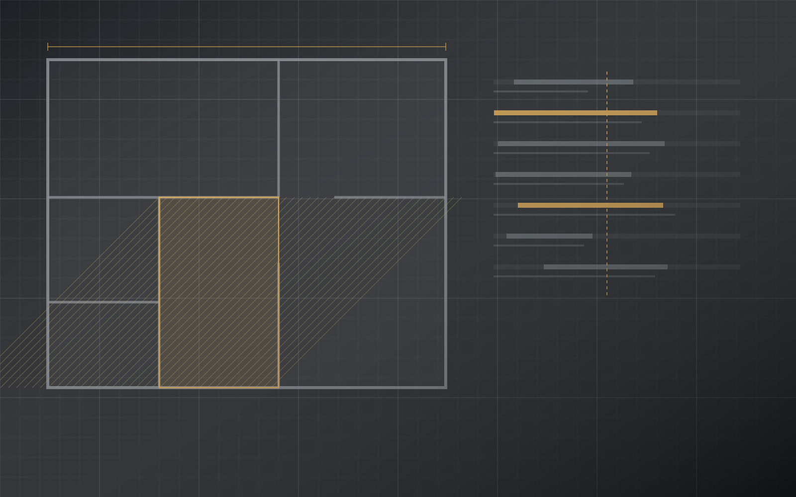
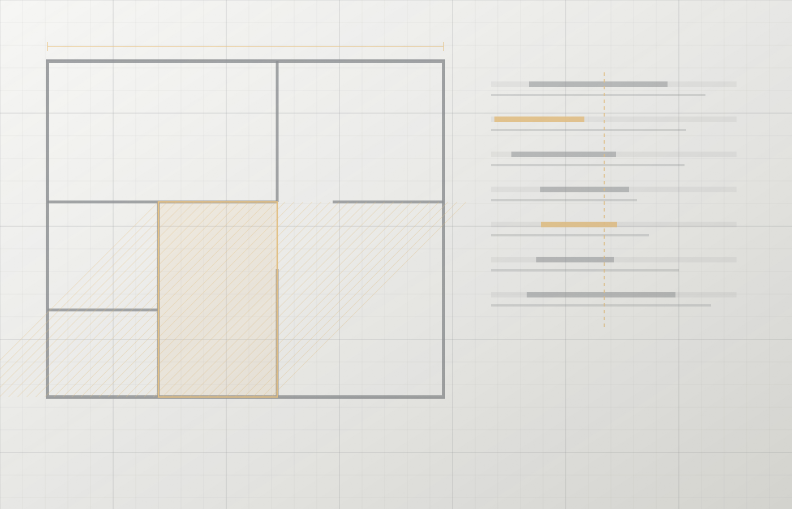
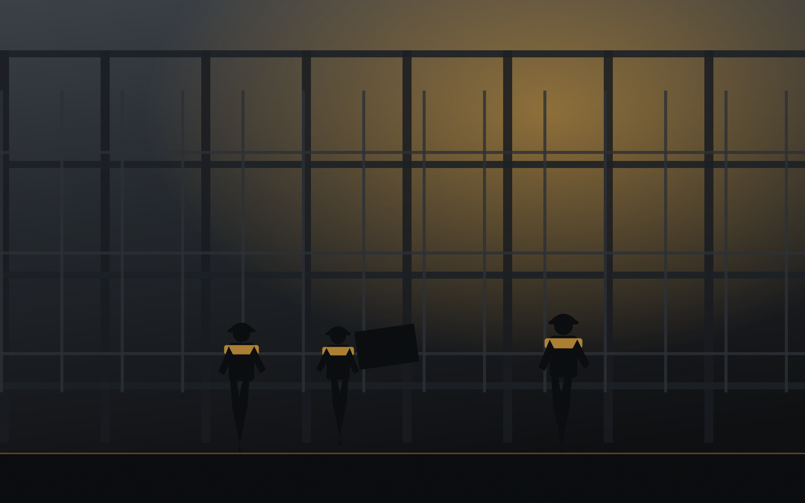
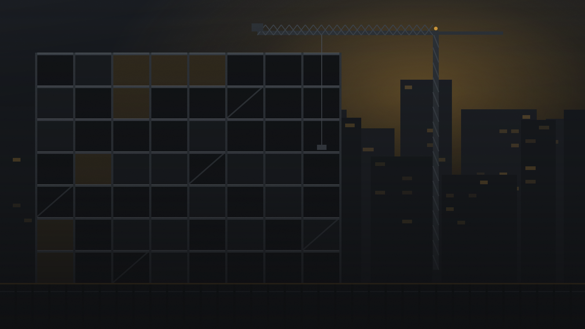

01
Analyse du projet
Lecture des plans et des devis, visite des lieux, identification des contraintes techniques, des accès et des points de risque avant l’ouverture du chantier.

Gestion et gérance de chantier
Construction AVQ inc. contribue à la coordination du projet et au suivi des travaux : séquence, intervenants, échéancier et qualité livrée. Un chantier structuré coûte moins cher qu’un chantier repris.
Le problème
Ils viennent des décisions prises trop tard, d’un matériau commandé trop tôt, d’un métier appelé avant que le précédent ait terminé, ou d’une information qui n’a pas circulé.
« Un chantier bien géré permet de réduire les retards, d’améliorer la coordination entre les métiers et de maintenir une qualité d’exécution constante. Construction AVQ inc. assure un suivi structuré du projet afin que chaque étape soit réalisée au bon moment et selon les exigences du projet. »

Notre processus
De l’analyse initiale à la remise des clés, chaque étape a un objectif et un livrable.
Lecture des plans et des devis, visite des lieux, identification des contraintes techniques, des accès et des points de risque avant l’ouverture du chantier.
Découpage du projet en lots, séquence des travaux, jalons, délais d’approvisionnement et calendrier réaliste plutôt qu’optimiste.
Attribution claire des responsabilités, appel des corps de métier au bon moment et gestion des interfaces entre les lots.
Présence sur le terrain, comptes rendus d’avancement, mise à jour de l’échéancier et arbitrage des imprévus.
Vérifications aux étapes clés — avant fermeture des murs, avant les finitions — et correction pendant qu’elle reste simple.
Inspection finale, liste de déficiences, corrections et remise du projet au client.
Champ d’intervention
Un seul interlocuteur
Un seul point de coordination pour mieux structurer votre chantier. Construction AVQ inc.
Plutôt que de multiplier les échanges entre le client, les corps de métier, les fournisseurs et les professionnels, tout passe par un même canal. Les décisions se prennent plus vite, et les responsabilités restent claires.

Pour qui

Parlons de votre projet
Que vous planifiiez une rénovation, un projet de construction, des travaux de carrelage ou que vous ayez besoin d’une gestion efficace de votre chantier, Construction AVQ inc. est là pour vous accompagner.